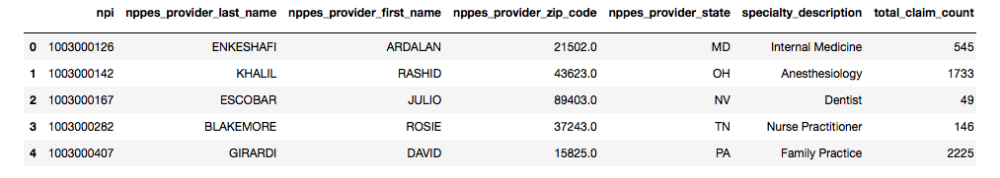
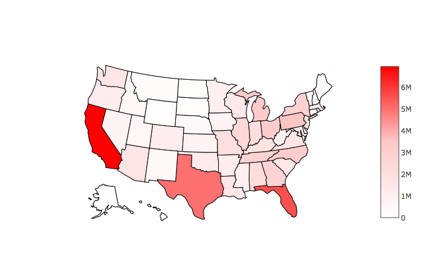

View the full Notebook with code on my GitHub here
The purpose of this notebook was to explore a Center for Medicare & Medicaid Services (CMS) dataset posted on Kaggle here. The dataset "presents information on the individual opioid prescribing rates of health providers that participate in Medicare Part D program."
Let's take a look at the data!
---Intro to the Data---

The first table describes the data, while the second is a preview of the data itself (not all columns shown in picture).
'NPI' = 'National Provider Identifier', a unique ID for every physician in America.
'NPPES' = 'National Plan & Provider Enumeration System'
The remaining columns should be self-explanatory.
As we can see, over 1.1 million unique physians are in this database. There are less data entires for opioid claims / extended release claims, likely because many physicians have prescribed 0 opioids. A quick search on UpToDate shows that extended-release opioids, as you might expect, are indicated for long-acting/chronic pain. We can also see from the mean/median discrepancy that total claim count, opioid claim count, and extended-release opioid claim count have a right-tailed distribution.
Let's look at the frequency distribution of opioid prescriptions.
The vast majority (700K+) of the 1.1 million doctors have prescribed 0 or almost 0 opioids. There is a sharp decline in # of opioids prescribed after then, until around 10,000 opioids prescribed. The frequency of superprescribers becomes more even at this point between 10K to 22.5K opioids prescribed.
This begs the question... who are these doctors who have prescribed tens of thousands of opioids?
---Who Prescribes the Most Opioids?---
These physicians have prescribed over 10K opioids each!
---------Which specialties prescribe the most?
Family and Internal lead opioid prescriptions. Surprisingly, Nurse Practitioners and PAs account for almost 20% of prescriptions, though these prescriptions were probably made with a team including other Family/Internal docs.
A quick Google search shows that Family and Internal comprise the most active physicians in patient care, so the fact that they prescribed the most opioids shouldn't be surprising.
---------A more interesting statistic would be a specialty breakdown of which doctors have prescribed over 5K in opioids... we can call them opioid superprescribers. After all, a glance through the top opioid prescribers show that most of them are Pain doctors, not Family or Internal docs.
Now, the specialty dynamic changes. The vast majority of opioid superprescribers are interventional pain, anesthesiology, physical medicine, and pain management doctors.
---------How about which specialty has the highest number of opioids prescribed per doctor in that specialty? In other words, doctors of which specialty on average prescribe the most opioids?
Now we see that Pain Management (combined with Interventional Pain doctors here) prescribe the most per doctor relative to the other specialties. I was surprised to see Rheumatologists here, who do not prescribe large amounts overall relative to other specialties, but clearly high amounts per doctor relative to other specialties. They likely see lots of autoimmune / joint pain patients.
---Which States Have the Most Opioid Prescriptions?---

This makes sense... CA, TX, FL make up the top 3 most populous states in America with PA and MI in the top 10.
A more interesting statistic would be opioid per capita.

California and Texas become relatively low in opioid claims after accounting for per capita. The southern and Applachian states experience highest opioid claims per capita. This corroborates the opioid epidemic narrative.